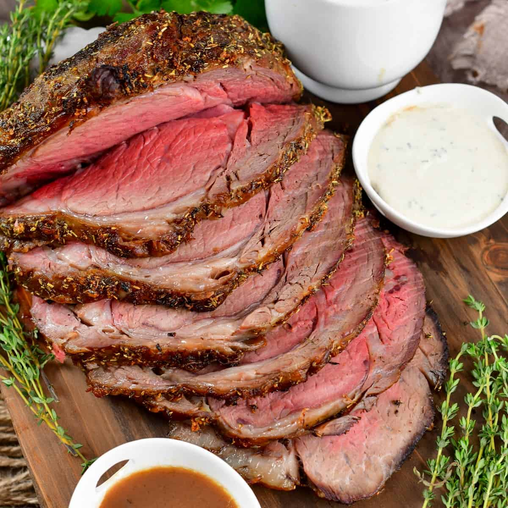

The Best Homemade Steak!

What Makes a Good Steak?
A great steak is juicy, meaning it's full of delicious moisture in every bite. As you cut into the steak, the juices should flow freely, making every piece even more delicious. Juiciness makes each mouthful a mix of tenderness and taste, making your meal special and satisfying.
Ingredients
- Ribeye Steak
- Extra Virgin Olive Oil
- Seasoning (Sea salt, black pepper, garlic powder + smoked paprika)
- Unsalted Butter
- Garlic Cloves
- Lemon Juice
- Fresh Thyme Sprigs
Steps:
- Pat dry --- Dry the steaks thoroughly using paper towels to achieve a flawless sear and minimize oil splatter.
- Generously season --- Season both sides of the steaks with salt, pepper, garlic powder, and smoked paprika just before cooking.
- Heat the pan --- Heat a medium 10-inch cast iron skillet over medium-high heat until hot and add the olive oil to coat the bottom. Once hot, add the steaks to the skillet and sear the steaks on the first side for 4-5 minutes or until a brown crust has formed and using tongs, turn them onto their opposite sides-------searing for another 4-5 minutes.
- When all of the wings are fully cooked, toss the wings in the heated sauce. Make sure that they are fully coated in sauce. Serve with your favorite dipping sauce and enjoy!
- Add butter + aromatics--- Now, reduce the heat to medium and add the butter, garlic cloves, and thyme sprigs on the sides of the steaks in the pan. As the butter melts, spoon the butter sauce over the steak, slightly tilting the pan. Continue to spoon the butter sauce atop steaks for another 1-2 minutes. NOTE: Be sure to check the internal temperature of your steaks for desired doneness.
- Remove steak --- Rest 10 minutes before slicing against the grain.
Return to Main Page